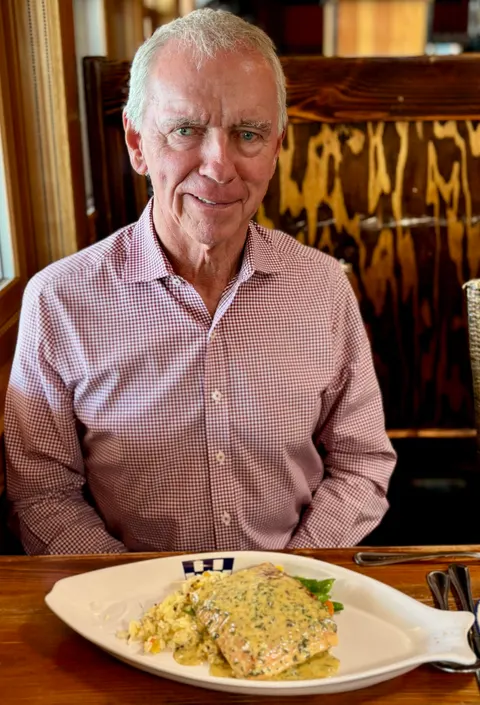
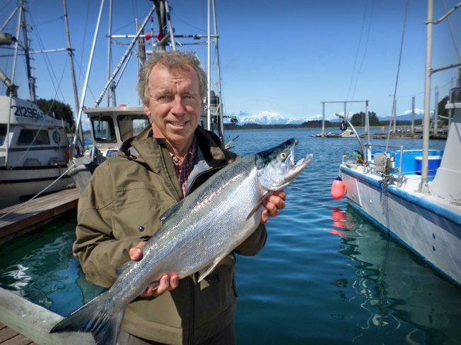
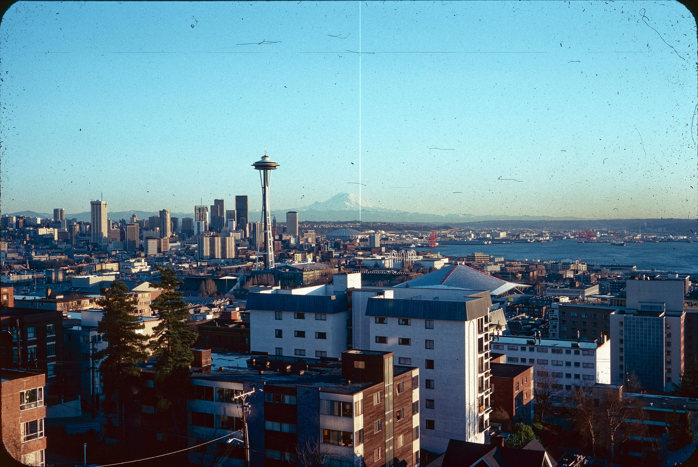
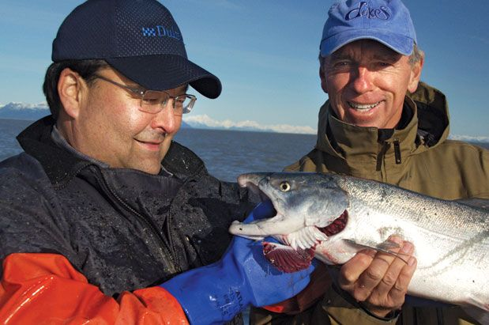
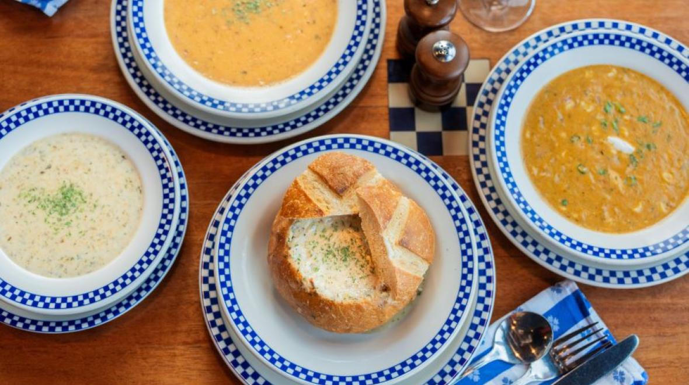
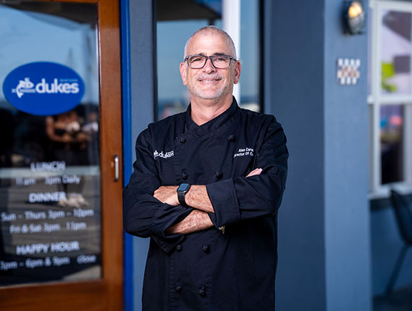
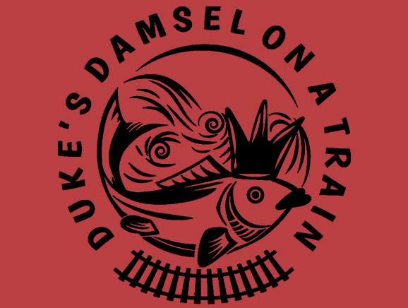

Duke Moscrip
Founder
Opened the original Duke's on Queen Anne in 1976. Still flies to Alaska to vet the boats, still runs taste tests in the kitchen, still writes most of the company's blog posts himself.
Duke opened the first restaurant in 1976, two blocks from the Seattle Center, paying employees in cash out of cigar boxes. His son John runs the company now. The salmon still comes off the same Alaska boats. The chowder still uses Duke's grandfather's recipe. The story is short because most of it never needed changing.


Duke's, the early years.
Duke Moscrip broke away from a partnership at Ray's Boathouse and opened the first Duke's Bar & Grill on Queen Anne in 1976. Two blocks from the Seattle Center. Eclectic menu. Cigar boxes for a register because nobody had time to set up a real one yet.
He wanted a hangout. The kind of place where the after-work crowd from the Lower Queen Anne ad agencies could sit at the bar without being made to feel like they were intruding on something fancy. Quality, but no fuss. That tension between casual and serious has run through every Duke's since.
"There were no paychecks. We didn't even have a cash register. We kept the money in cigar boxes. Really, cigar boxes."
I personally guarantee that you'll enjoy your meal, or you don't pay.

For more than three decades, our wild salmon has come from the same small, family-run Alaska fishing operations. Many of them are on their second or third generation. Duke knows the captains by name and visits the docks himself. Most of them now ship to Duke's because Duke's was a buyer when their fathers were running the boats.
Alaska is the only US state with sustainability written directly into its constitution. Article VIII has required all fisheries to be managed on a sustained-yield basis since statehood in 1959. That isn't marketing language; it's the law our suppliers fish under, and it's why Alaska salmon is what we serve when we say "wild."
Once it's caught, the fish is processed and flash-frozen within hours. The result tastes better than what most restaurants call "fresh," which is to say "shipped on ice for a week." We've run the taste tests. The ribbon goes to the flash-frozen fish every time.
The base of our clam chowder is Duke's grandfather's recipe, made in New England long before any of this was a restaurant. We've been pouring it since 1989, when the first Chowder House opened on South Lake Union, and we've never had a reason to change it.
It won the Seattle Chowder Cook Off three years running and has picked up best-of awards from 425 Magazine and South Sound Magazine more times than we keep track of. It's also the reason we ship frozen kits across the country, so the people who grew up eating it can still have a Duke's lunch wherever they live now.
Six other chowder flavors have come from that original recipe over the years. Crab. Smoked salmon. Lobster. None of them displaced the original. None of them ever will.

Duke founded the company. His son John runs it now. The chef who plates your fish has been with us long enough to remember when Duke himself worked the Queen Anne floor. The thread doesn't break.

Opened the original Duke's on Queen Anne in 1976. Still flies to Alaska to vet the boats, still runs taste tests in the kitchen, still writes most of the company's blog posts himself.
Took over running the company. Day-to-day operations, sourcing relationships, the foundation work. Wrote the announcement of the Saving Salmon Foundation in 2025.

Runs the kitchens across all six restaurants. Develops the seasonal menu alongside Chef Bill's specials. Believes a deviled egg without crab on top is a missed opportunity.
From a Queen Anne bar with cigar-box accounting to six dining rooms across Western Washington, a foundation, and a frozen-chowder business that ships nationwide. Most of the milestones below were unintentional.
Two blocks from the Seattle Center. Chalkboard menu, eclectic food, cigar boxes for a register. Duke pays employees in cash every night.
The success of Queen Anne pulls a second location across the lake.
The grandfather's chowder recipe goes on the menu and stays on the menu. The "Chowder House" concept becomes the company's center of gravity.
Right on the lake. Seaplanes overhead. Most of the year, the deck is open.
Duke starts buying directly from small, family-run Alaska boats. Many of those relationships are still intact thirty years later, now into the second and third generation of the same fishing families.
The Chowder House relocates to a larger waterfront spot with the same view, a bigger bar, and party facilities for private dining.
The water at your shoulder, Mount Rainier in the window.
Duke's expands into Kent Station and Southcenter. Six dining rooms, all running on the same playbook.
Duke's, Damsel Cellars, and the band Train start a foundation to fund habitat restoration for wild Pacific salmon. The fish that built the company gets some of it back.

Wild Pacific salmon are running out of the clean, cold water they need to spawn in. In 2025 we partnered with Damsel Cellars and the band Train to start a foundation that funds habitat restoration across the rivers our fish come home to.
If we serve it for a living, we have a stake in keeping it alive.
Six dining rooms across Western Washington. Same family, same recipes, same fishermen we started with.